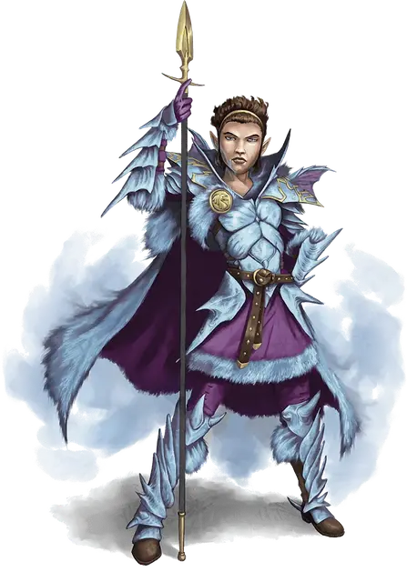

Талис Белая
Talis the White
Средний Гуманоид (Полуэльф), законно-злой, именной НИП

Класс Доспеха 18 (чешуйчатый доспех +1, щит)
Хиты 58 (9к8 + 18)
Скорость 30 футов
| мод | спас | ||
|---|---|---|---|
| СИЛ | 14 | +2 | +2 |
| ЛОВ | 12 | +1 | +1 |
| ТЕЛ | 14 | +2 | +2 |
| мод | спас | ||
|---|---|---|---|
| ИНТ | 10 | +0 | +0 |
| МДР | 16 | +3 | +6 |
| ХАР | 16 | +3 | +6 |
Навыки Восприятие +6, Обман +6, Проницательность +6, Убеждение +6
Чувства тёмное зрение 60 футов, пассивное Восприятие 16
Языки Общий, Драконий, Инфернальный, Эльфийский
Опасность 5 (1800 опыта)
Бонус мастерства +3
Особенности
Специальное снаряжение. У Талис есть чешуйчатый доспех +1, +2, +3 [armor +1, +2, +3] и волшебная палочка зимы [wand of winter].
Наследие фей. Талис совершает с преимуществом спасброски от очарования, и её невозможно магически усыпить.
Использование заклинаний. Талис является заклинателем 9-го уровня. Её базовой характеристикой является Мудрость (Сл спасброска от заклинаний 14, +6 к атакам заклинаниями). У Талис подготовлены следующие заклинания жреца:
• Заговоры (по желанию): указание [guidance], сопротивление [resistance], чудотворство [thaumaturgy]
• 1 уровень (4 ячейки): приказ [command], лечащее слово [healing word], лечение ран [cure wounds], нанесение ран [inflict wounds]
• 2 уровень (3 ячейки): глухота/слепота [blindness/deafness], малое восстановление [lesser restoration], божественное оружие (копьё) [spiritual weapon]
• 3 уровень (3 ячейки): рассеивание магии [dispel magic], множественное лечащее слово [mass healing word], послание [sending]
• 4 уровень (3 ячейки): защита от смерти [death ward], свобода перемещения [freedom of movement]
• 5 уровень (1 ячейка): нашествие насекомых [insect plague]
Удар зимы (3/день). Раз в раунд, когда Талис попадает рукопашной атакой, она может потратить одно из использований этой черты, чтобы нанести дополнительные 9 (2к8) урона холодом.
Действия
Копьё. Рукопашная или Дальнобойная атака оружием: +5 к попаданию, досягаемость 5 футов или дистанция 20 / 60 футов, одна цель. Попадание: 6 (1к6+2) колющего урона.